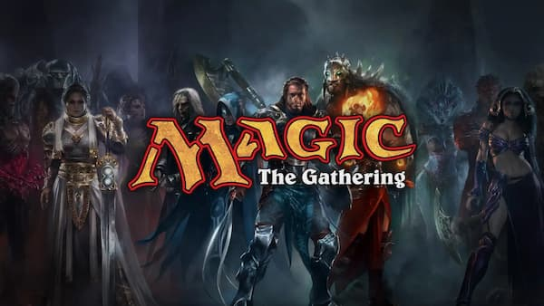
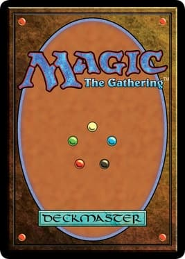

Home
About The Chapter

Welcome to the MTG - Utah Chapter, your premier digital hub dedicated to bringing local Magic: The Gathering players together to learn, strategize, and grow our vibrant community. Whether you are a seasoned planeswalker with years of competitive experience or a brand-new player looking to cast your very first spell, you will find all the tools, guides, and resources you need right here. Our passion for the game began just a few years ago when a close friend extended an invitation to a local game store for a booster draft night. That single, immersive event sparked a lifelong hobby, leading to regular attendance at local tournaments and gatherings ever since. Among the many ways to play, nothing quite matches the excitement of Prerelease events for upcoming sets. These gatherings provide players with a specialized kit to build a unique 40-card deck on the spot, followed by three competitive rounds against diverse opponents in a friendly, high-energy environment.
To truly understand the essence of the game, one must understand the role of the Planeswalker. In the deep lore of Magic: The Gathering, the Multiverse is an infinite web of diverse worlds, or "planes," each possessing its own unique ecosystems, cultures, and laws of magic. Most living beings are entirely unaware that other worlds exist, bound forever to their home planes. However, an incredibly rare few—fewer than one in a million—are born with an elusive genetic trait known as the "Planeswalker's Spark." When these individuals experience a moment of extreme trauma, intense emotional breakthrough, or profound crisis, their spark ignites. This awakening grants them the extraordinary ability to step through the blind eternities and travel between planes at will. As a player, you embody one of these powerful mages. Your customized deck represents your personal spellbook, containing memories of lands you have visited, creatures you have bonded with, and destructive spells you have mastered across your journey through the Multiverse.

At the Utah Chapter, we are dedicated to highlighting local event calendars and sharing comprehensive reviews of the fantastic game stores across our state. To help newcomers hit the ground running, we have outlined the core rules of a standard game below. Beyond standard play, our community actively explores dynamic formats like Commander, booster drafts, and team-based formats like Two-Headed Giant. We hope this platform inspires you to experience the deep strategy of Magic, discover new venues, and connect with fellow enthusiasts throughout Utah. Thank you for visiting!
How To Play Magic
Magic: The Gathering is a strategy card game where two or more players act as wizards (“Planeswalkers”) locked in a duel. Your goal is to reduce your opponent's life total from 20 to 0.
Game Basics
• The Deck: You play with a custom deck of cards (usually 60 cards in standard formats).
• Mana: The game's currency. You play Land cards to generate mana, which you spend to cast spells.
• Spells: You use mana to summon Creatures to fight for you, or cast temporary spells like Instants and Sorceries to damage opponents or defend yourself.
Turn Structure
Each player takes turns going through a sequence of phases:
1. Beginning Phase: Turn all your sideways (used) cards straight again (Untap), then Draw a card.
2. Main Phase: Play one land card from your hand and use your mana to summon creatures or cast spells.
3. Combat Phase: Attack your opponent with your creatures. Your opponent can choose to block with their own creatures to protect their life total.
4. Second Main Phase: Cast any additional spells with your remaining mana.
5. End Phase: Cleanup any temporary effects and pass the turn to your opponent.
You win the moment your opponent's health hits 0, or if they completely run out of cards to draw from their deck.